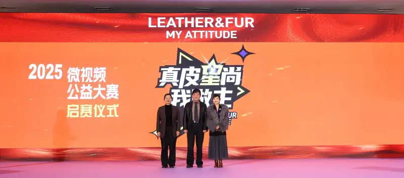

As the first micro-video contest in China's leather and fur industry with real leather and natural fur as its theme, and the only cross-border event that blends the traits of leather and fur and digital media, the launch ceremony of the 2025 Real Leather Star Fashion Micro-Video Charity Contest was held on March 20, 2025, at the Haining Convention and Exhibition Center. The contest is co-hosted by the China Leather Industry Association, Rayli Magazine, and Xingye Leather Technology Co., Ltd., and co-organized by the International Fur Federation, Hongxing Automotive Leather (Fujian) Development Co., Ltd., and the Hebei Leather Industry Technology Innovation Strategic Alliance. At the ceremony, Li Yuzhong, vice president of the China National Light Industry Council and chairman of the China Leather Industry Association, Lin Xiaoqin, chairwoman of Haining Leather City, and Wang Jing, CEO of the International Fur Federation in China, lit up the launch screen together.
The contest takes “telling the story of leather and fur” as its core theme. It focuses on the natural, ecological, green, fashionable, and durable traits of leather and fur, and passes these traits to consumers. It lets the micro-video art form bring new vitality to the passing on and development of leather and fur culture.
2025 is called the first year of AI terminal applications. This year the contest actively rides the AI wave. It encourages creators to use AI technology, raise the efficiency and quality of content creation, and open up new creative and expressive ways. Whether recreating history, generating creative design, ad and marketing content, or wild storylines, or building sci-fi scenes and virtual worlds, it is exciting to see what creative sparks AI plus micro-video plus real leather or natural fur will ignite.
The contest runs from March 20 to May 30, 2025, for more than two months. It is divided into a student group and a public group. There are 2 first prizes, 6 second prizes, 10 third prizes, 12 single-category awards, and 20 shortlist awards, with total prize money of over 80,000 yuan. The results will be officially announced on July 16.
Since the first event in 2022, the Real Leather Star Fashion Micro-Video Charity Contest has run for three editions. It has won wide attention from all sectors and has drawn thousands of participants, covering teachers, students, fashion bloggers, photography enthusiasts, and designers. Micro-video creators use light as a brush, blending modern technology and art, and giving viewers both visual and emotional enjoyment. To date, the contest works have been viewed over 4.6 million times on Douyin, Bilibili, and other video platforms.
The organizers not only promote works about real leather and natural fur on domestic video platforms, but also make some winning works into English versions for TikTok, Facebook, and other platforms abroad, where they are well received. Talented creators from all fields are welcome to log on to China Leather Net for the latest entry details, and to start this unique micro-video contest with us. Use your lens to fix the unforgettable moments, and let the charm of real leather and natural fur shine even brighter on the micro-video stage. (Text and photos by the China Leather Industry Association).